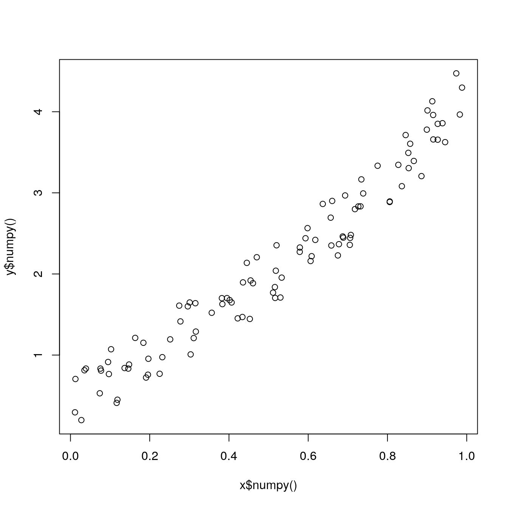

Chapter 2 PyTorch and NumPy
Last update: Thu Oct 22 14:58:45 2020 -0500 (ea06f70ca)
2.1 PyTorch modules in rTorch
2.1.1 torchvision
This is an example of using the torchvision module. With torchvision we could download any of the datasets made available by PyTorch. In this example, we will be downloading the training dataset of the MNIST handwritten digits. There are 60,000 images in the training set and 10,000 images in the test set. The images will download on the folder ./datasets.
library(rTorch)
transforms <- torchvision$transforms
# this is the folder where the datasets will be downloaded
local_folder <- './datasets/mnist_digits'
train_dataset = torchvision$datasets$MNIST(root = local_folder,
train = TRUE,
transform = transforms$ToTensor(),
download = TRUE)
train_dataset#> Dataset MNIST
#> Number of datapoints: 60000
#> Root location: ./datasets/mnist_digits
#> Split: Train
#> StandardTransform
#> Transform: ToTensor()You can do similarly for the test dataset if you set the flag train = FALSE. The test dataset has only 10,000 images.
test_dataset = torchvision$datasets$MNIST(root = local_folder,
train = FALSE,
transform = transforms$ToTensor())
test_dataset#> Dataset MNIST
#> Number of datapoints: 10000
#> Root location: ./datasets/mnist_digits
#> Split: Test
#> StandardTransform
#> Transform: ToTensor()2.1.2 numpy
numpy is automaticaly installed when PyTorch is. There is some interdependence between both. Anytime that we need to do some transformation that is not available in PyTorch, we will use numpy. Just keep in mind that numpy does not have support for GPUs.
2.2 Common array operations
There are several operations that we could perform with numpy such creating arrays:
Create an array
Create an array:
#> [1] 1 2 3 4Create an array of a desired shape:
#> [,1] [,2] [,3]
#> [1,] 0 1 2
#> [2,] 3 4 5
#> [3,] 6 7 8Create an array by spelling out its components and type:
np$array(list(
list(73, 67, 43),
list(87, 134, 58),
list(102, 43, 37),
list(73, 67, 43),
list(91, 88, 64),
list(102, 43, 37),
list(69, 96, 70),
list(91, 88, 64),
list(102, 43, 37),
list(69, 96, 70)
), dtype='float32')#> [,1] [,2] [,3]
#> [1,] 73 67 43
#> [2,] 87 134 58
#> [3,] 102 43 37
#> [4,] 73 67 43
#> [5,] 91 88 64
#> [6,] 102 43 37
#> [7,] 69 96 70
#> [8,] 91 88 64
#> [9,] 102 43 37
#> [10,] 69 96 70We will use the train and test datasets that we loaded with torchvision.
Reshape an array
For the same test dataset that we loaded above from MNIST digits, we will show the image of the handwritten digit and its label or class. Before plotting the image, we need to:
- Extract the image and label from the dataset
- Convert the tensor to a numpy array
- Reshape the tensor as a 2D array
- Plot the digit and its label
rotate <- function(x) t(apply(x, 2, rev)) # function to rotate the matrix
# label for the image
label <- test_dataset[0][[2]]
label
# convert tensor to numpy array
.show_img <- test_dataset[0][[1]]$numpy()
dim(.show_img)
# reshape 3D array to 2D
show_img <- np$reshape(.show_img, c(28L, 28L))
dim(show_img)#> [1] 7
#> [1] 1 28 28
#> [1] 28 28Generate a random array in NumPy
# set the seed
np$random$seed(123L)
# generate a random array
x = np$random$rand(100L)
x
# calculate the y array
y = np$sin(x) * np$power(x, 3L) + 3L * x + np$random$rand(100L) * 0.8
class(x)
class(y)#> [1] 0.6965 0.2861 0.2269 0.5513 0.7195 0.4231 0.9808 0.6848 0.4809 0.3921
#> [11] 0.3432 0.7290 0.4386 0.0597 0.3980 0.7380 0.1825 0.1755 0.5316 0.5318
#> [21] 0.6344 0.8494 0.7245 0.6110 0.7224 0.3230 0.3618 0.2283 0.2937 0.6310
#> [31] 0.0921 0.4337 0.4309 0.4937 0.4258 0.3123 0.4264 0.8934 0.9442 0.5018
#> [41] 0.6240 0.1156 0.3173 0.4148 0.8663 0.2505 0.4830 0.9856 0.5195 0.6129
#> [51] 0.1206 0.8263 0.6031 0.5451 0.3428 0.3041 0.4170 0.6813 0.8755 0.5104
#> [61] 0.6693 0.5859 0.6249 0.6747 0.8423 0.0832 0.7637 0.2437 0.1942 0.5725
#> [71] 0.0957 0.8853 0.6272 0.7234 0.0161 0.5944 0.5568 0.1590 0.1531 0.6955
#> [81] 0.3188 0.6920 0.5544 0.3890 0.9251 0.8417 0.3574 0.0436 0.3048 0.3982
#> [91] 0.7050 0.9954 0.3559 0.7625 0.5932 0.6917 0.1511 0.3989 0.2409 0.3435
#> [1] "array"
#> [1] "array"From the classes, we can tell that the numpy arrays are automatically converted to R arrays.

2.3 Common tensor operations
Generate random tensors
The same operation can be performed with pure torch tensors:
library(rTorch)
invisible(torch$manual_seed(123L))
x <- torch$rand(100L) # use torch$randn(100L): positive and negative numbers
y <- torch$sin(x) * torch$pow(x, 3L) + 3L * x + torch$rand(100L) * 0.8
class(x)
class(y)#> [1] "torch.Tensor" "torch._C._TensorBase" "python.builtin.object"
#> [1] "torch.Tensor" "torch._C._TensorBase" "python.builtin.object"Since the clasess are torch tensors, to plot them in R, they need to be converted to numpy, and then R:

numpy array to PyTorch tensor
Converting a numpy array to a PyTorch tensor is a very common operation that I have seen in examples using PyTorch. Creating first the array in numpy. and then convert it to a torch tensor.
#> [,1] [,2] [,3]
#> [1,] 0 0 1
#> [2,] 0 1 1
#> [3,] 1 0 1
#> [4,] 1 1 1This is another common operation that will find in the PyTorch tutorials: converting a numpy array from a certain type to a tensor of the same type:
# convert the numpy array to a float type
Xn <- np$float32(x)
# convert the numpy array to a float tensor
Xt <- torch$FloatTensor(Xn)
Xt#> tensor([[0., 0., 1.],
#> [0., 1., 1.],
#> [1., 0., 1.],
#> [1., 1., 1.]])2.4 Python built-in functions
To access the Python built-in functions we make use of the package reticulate and the function import_builtins().
Here are part of the built-in functions and operators offered by reticulate:
py_bi <- import_builtins()
grep("Error|Warning|Exit", names(py_bi), value = TRUE, invert = TRUE, perl = TRUE)#> [1] "abs" "all" "any"
#> [4] "ascii" "BaseException" "bin"
#> [7] "bool" "breakpoint" "bytearray"
#> [10] "bytes" "callable" "chr"
#> [13] "classmethod" "compile" "complex"
#> [16] "copyright" "credits" "delattr"
#> [19] "dict" "dir" "divmod"
#> [22] "Ellipsis" "enumerate" "eval"
#> [25] "Exception" "exec" "exit"
#> [28] "False" "filter" "float"
#> [31] "format" "frozenset" "getattr"
#> [34] "globals" "hasattr" "hash"
#> [37] "help" "hex" "id"
#> [40] "input" "int" "isinstance"
#> [43] "issubclass" "iter" "KeyboardInterrupt"
#> [46] "len" "license" "list"
#> [49] "locals" "map" "max"
#> [52] "memoryview" "min" "next"
#> [55] "None" "NotImplemented" "object"
#> [58] "oct" "open" "ord"
#> [61] "pow" "print" "property"
#> [64] "quit" "range" "repr"
#> [67] "reversed" "round" "set"
#> [70] "setattr" "slice" "sorted"
#> [73] "staticmethod" "StopAsyncIteration" "StopIteration"
#> [76] "str" "sum" "super"
#> [79] "True" "tuple" "type"
#> [82] "vars" "zip"Length of a dataset
Sometimes, we will need the Python len function to find out the length of an object:
#> [1] 60000
#> [1] 10000Iterators
Iterators are used a lot in dataset operations when running a neural network. In this example we will iterate through only 100 elements of the 60,000 of the train dataset. The goal is printing the “label†or “class†for the digits we are reading. The digits are not show here; they are stored in tensors.
# iterate through training dataset
enum_train_dataset <- py_bi$enumerate(train_dataset)
cat(sprintf("%8s %8s \n", "index", "label"))
for (i in 1:py_bi$len(train_dataset)) {
obj <- reticulate::iter_next(enum_train_dataset)
idx <- obj[[1]] # index number
cat(sprintf("%8d %5d \n", idx, obj[[2]][[2]]))
if (i >= 100) break # print only 100 labels
}
#> index label
#> 0 5
#> 1 0
#> 2 4
#> 3 1
#> 4 9
#> 5 2
#> 6 1
#> 7 3
#> 8 1
#> 9 4
#> 10 3
#> 11 5
#> 12 3
#> 13 6
#> 14 1
#> 15 7
#> 16 2
#> 17 8
#> 18 6
#> 19 9
#> 20 4
#> 21 0
#> 22 9
#> 23 1
#> 24 1
#> 25 2
#> 26 4
#> 27 3
#> 28 2
#> 29 7
#> 30 3
#> 31 8
#> 32 6
#> 33 9
#> 34 0
#> 35 5
#> 36 6
#> 37 0
#> 38 7
#> 39 6
#> 40 1
#> 41 8
#> 42 7
#> 43 9
#> 44 3
#> 45 9
#> 46 8
#> 47 5
#> 48 9
#> 49 3
#> 50 3
#> 51 0
#> 52 7
#> 53 4
#> 54 9
#> 55 8
#> 56 0
#> 57 9
#> 58 4
#> 59 1
#> 60 4
#> 61 4
#> 62 6
#> 63 0
#> 64 4
#> 65 5
#> 66 6
#> 67 1
#> 68 0
#> 69 0
#> 70 1
#> 71 7
#> 72 1
#> 73 6
#> 74 3
#> 75 0
#> 76 2
#> 77 1
#> 78 1
#> 79 7
#> 80 9
#> 81 0
#> 82 2
#> 83 6
#> 84 7
#> 85 8
#> 86 3
#> 87 9
#> 88 0
#> 89 4
#> 90 6
#> 91 7
#> 92 4
#> 93 6
#> 94 8
#> 95 0
#> 96 7
#> 97 8
#> 98 3
#> 99 1Types and instances
Types, instances and classes are important to take decisions on how we will process data that is being read from the datasets. In this example, we want to know if an object is of certain instance:
# get the class of the object
py_bi$type(train_dataset)
# is train_dataset a torchvision dataset class
py_bi$isinstance(train_dataset, torchvision$datasets$mnist$MNIST)#> <class 'torchvision.datasets.mnist.MNIST'>
#> [1] TRUE